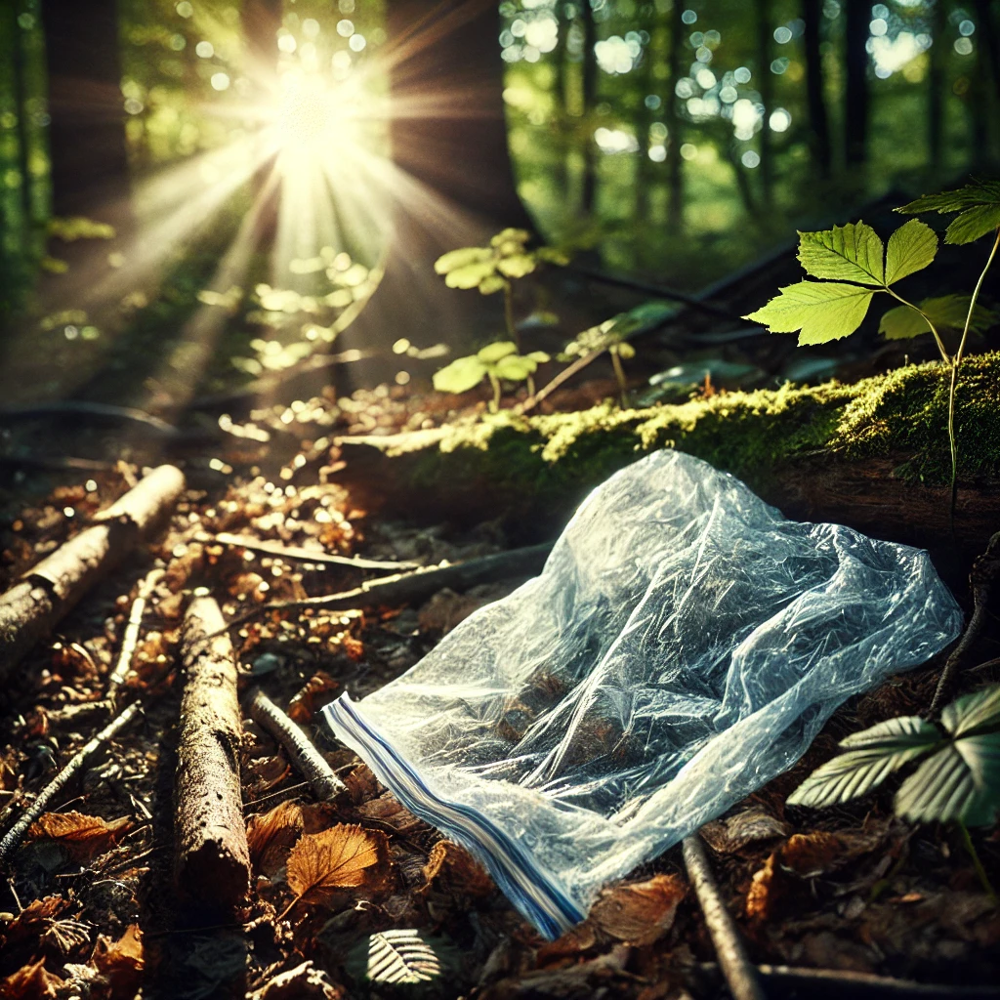
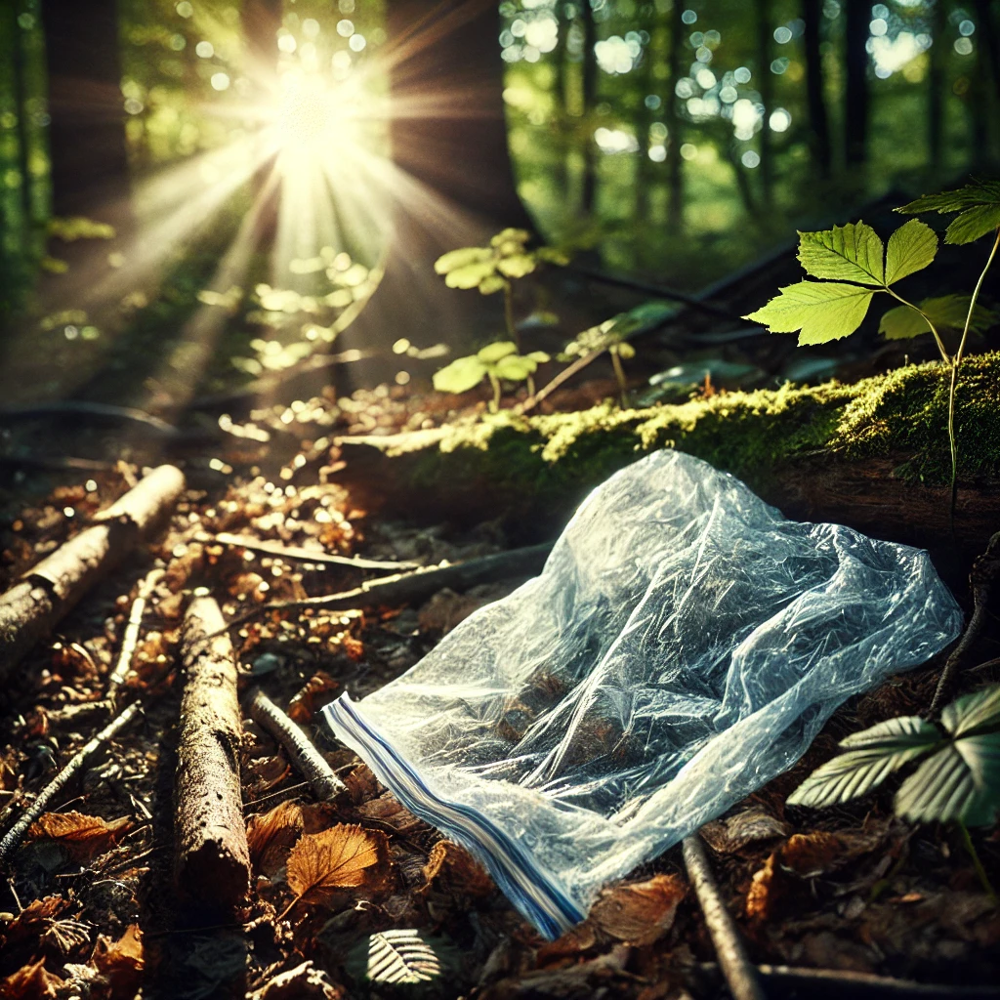

import pandas as pd
import numpy as np
environments = ['Soil', 'Water', 'Air']
materials = ['PLA', 'PHA', 'Biodegradable Plastic']
data = []
for env in environments:
for material in materials:
for temp inrange(10, 41, 10): # 模擬10°C至40°C
degradation_time = np.random.uniform(1, 12) * (41 - temp) / 10
data.append([env, material, temp, round(degradation_time, 2)])
df = pd.DataFrame(data, columns=['Environment', 'Material', 'Temperature (°C)', 'Degradation Time (weeks)'])
df
結果展示：
這段程式碼模擬了材料的降解行為，提供了不同環境、材料和溫度條件下的降解時間數據，這些數據可用於：
比較不同材料的環境友好性。
探索溫度對降解速率的影響。
支持科學研究、環保技術開發等應用場景。
可視化圖表：
import matplotlib.pyplot as plt
import seaborn as sns
df['Degradation Time (months)'] = df['Degradation Time (weeks)'] / 4.33
plt.figure(figsize=(10, 6))
sns.barplot(data=df, x='Environment', y='Degradation Time (months)', hue='Material')
plt.title('Degradation Time of Materials in Different Environments', fontsize=14)
plt.xlabel('Environment', fontsize=12)
plt.ylabel('Degradation Time (months)', fontsize=12)
plt.legend(title='Material', fontsize=10)
plt.show()
 
